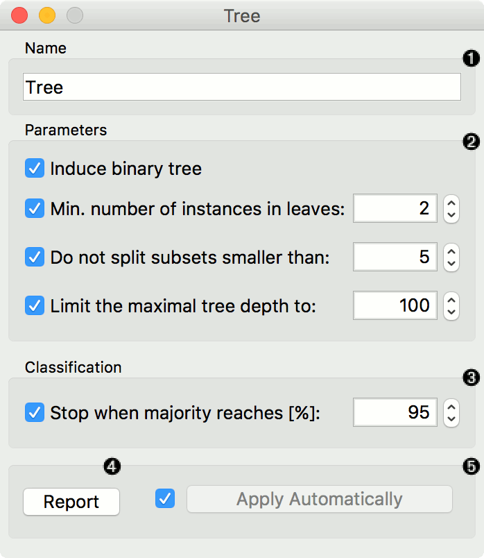
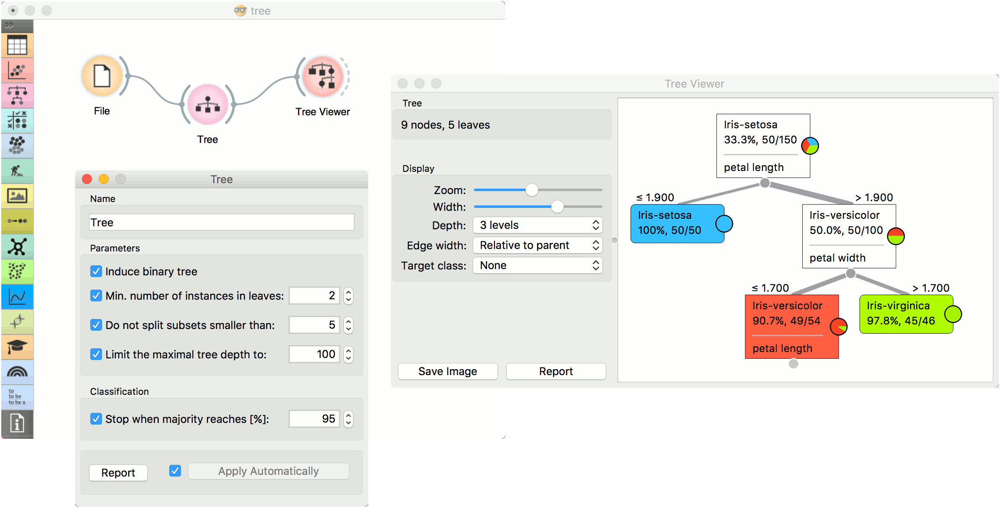
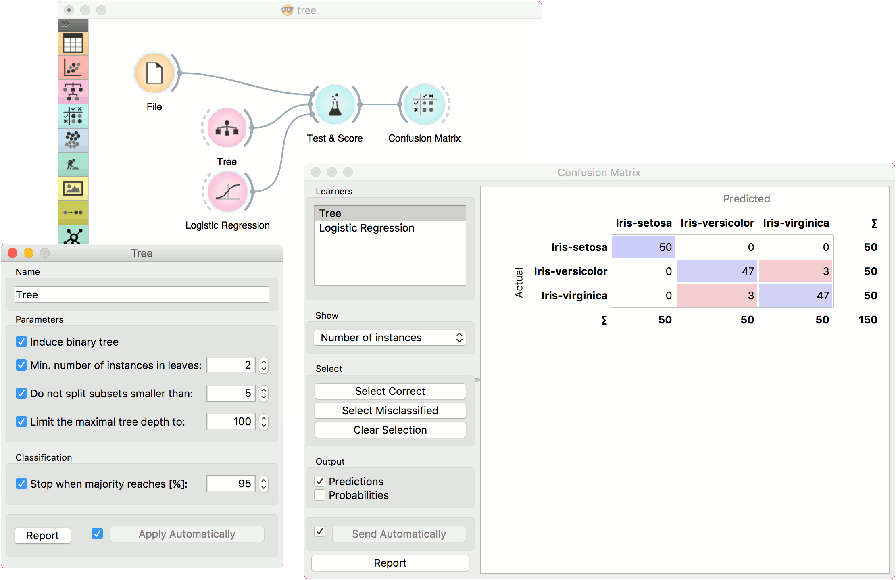
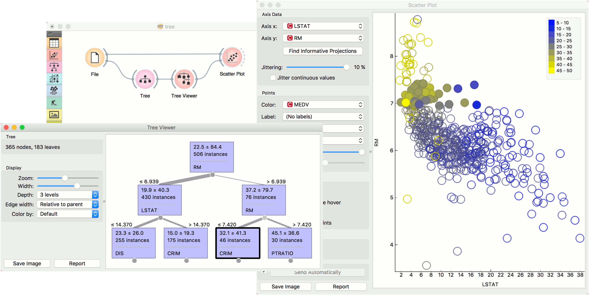

Tree
A tree algorithm with forward pruning.
Inputs
- Data: input dataset
- Preprocessor: preprocessing method(s)
Outputs
- Learner: decision tree learning algorithm
- Model: trained model
Tree is a simple algorithm that splits the data into nodes by class purity (information gain for categorical and MSE for numeric target variable). It is a precursor to Random Forest. Tree in Orange is designed in-house and can handle both categorical and numeric datasets.
It can also be used for both classification and regression tasks.

- The learner can be given a name under which it will appear in other widgets. The default name is “Tree”.
- Tree parameters:
- Induce binary tree: build a binary tree (split into two child nodes)
- Min. number of instances in leaves: if checked, the algorithm will never construct a split which would put less than the specified number of training examples into any of the branches.
- Do not split subsets smaller than: forbids the algorithm to split the nodes with less than the given number of instances.
- Limit the maximal tree depth: limits the depth of the classification tree to the specified number of node levels.
- Stop when majority reaches [%]: stop splitting the nodes after a specified majority threshold is reached
- Produce a report. After changing the settings, you need to click Apply, which will put the new learner on the output and, if the training examples are given, construct a new classifier and output it as well. Alternatively, tick the box on the left and changes will be communicated automatically.
Preprocessing
Tree does not use any preprocessing.
Examples
There are two typical uses for this widget. First, you may want to induce a model and check what it looks like in Tree Viewer.

The second schema trains a model and evaluates its performance against Logistic Regression.

We used the iris dataset in both examples. However, Tree works for regression tasks as well. Use housing dataset and pass it to Tree. The selected tree node from Tree Viewer is presented in the Scatter Plot and we can see that the selected examples exhibit the same features.
